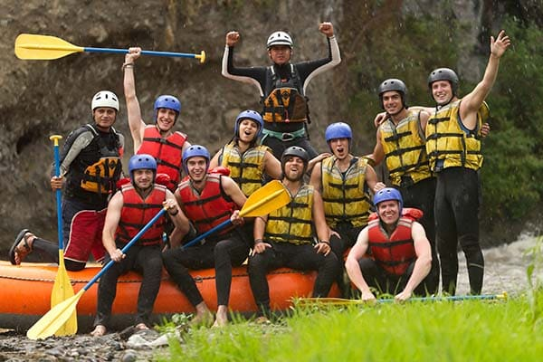

Nossa missão é proporcionar aventuras inesquecíveis, conectando pessoas à natureza por meio de experiências seguras, emocionantes e cheias de energia. Valorizamos o trabalho em equipe, a preservação ambiental e a paixão por explorar novos desafios.